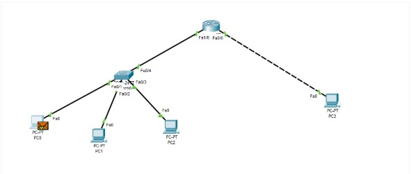
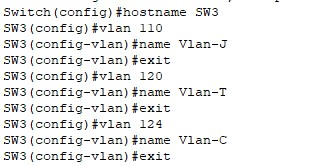
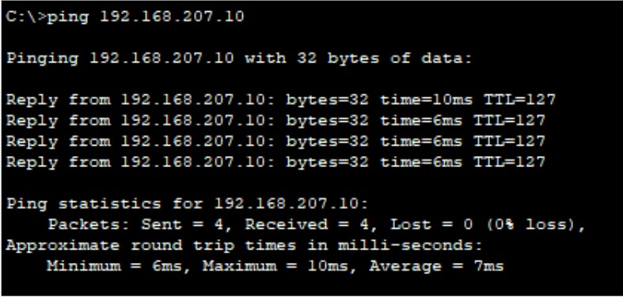

Contexte du projet
Dans le cadre de ma spécialisation SISR, j'ai conçu et mis en place une architecture réseau segmentée et sécurisée. L'objectif était d'isoler les différents départements d'une entreprise tout en leur fournissant les services réseaux essentiels (DHCP, DNS) et une connectivité optimale.
Mes missions réalisées
- Conception de la topologie logique et réalisation du plan d'adressage IP (IPv4).
- Configuration des équipements actifs (commutateurs et routeurs Cisco via le port console/SSH).
- Création et affectation de VLANs (Virtual Local Area Networks) pour séparer les flux métiers.
- Mise en place du routage inter-VLAN (Router-on-a-Stick) pour permettre la communication ciblée entre les réseaux.
- Déploiement et paramétrage des services DHCP pour l'adressage automatique et DNS pour la résolution de noms.

Tests et Validation
Une fois l'infrastructure déployée, j'ai procédé aux tests de connectivité (Ping, Traceroute) pour valider le bon fonctionnement du routage inter-VLAN et l'isolation des réseaux selon le cahier des charges.
